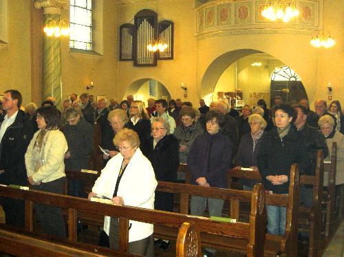
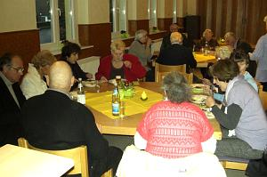
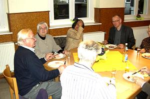
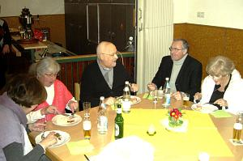
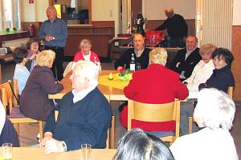
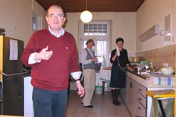

Die Gemeinde St. Josef hat ihr jährliches Patronatsfest mit einem Festgottesdienst unter Mitwirkung des Kirchenchores am Samstag im Rahmen einer Vorabendmesse gefeiert.
|
 |
|
Gläubige während des Festhochamtes in unserer Kirche St. Josef |
Das vom Chor frisch vorgetragene Liedgut ließ den Funken auf die Gemeinde überspringen, so dass auch Wechselgesänge zwischen Kirchenchor und Gemeinde eine Selbstverständlichkeit bildeten.
Und weil der Patronatstag unserer Gemeinde in diesem Jahr auf einen Samstag fiel, hatte der Gemeinderat eingeladen, nach dem Festhochamt noch ein wenig zu einem gemütlichen Beisammensein in unserem Gemeindeheim zu verweilen.
 |
 |
| Alt und Jung |
beim Gedankenaustausch |
Bei Getränken und einem einfachen Mahl mit Fleischkäse und Kartoffelsalat nutzten die hier Anwesenden die Möglichkeit zu einem familiären Gedankenaustausch.
|  |
 |
| „Essen und Trinken |
halten Leib und Seele zusammen.“ |
Der GR-Vorsitzende Herr Berretz informierte dabei u. a. auch über das weitere Vorgehen bezüglich der Gemeindeheim-Renovierung.
|  |
 |
| Herr Berretz informiert über Renovierungsplanung |
Herr Verheyen ist Küchenchef |
Be 20.03.2011

{kind=link}
{kind=link}
{kind=link}
{kind=link}
{kind=link}